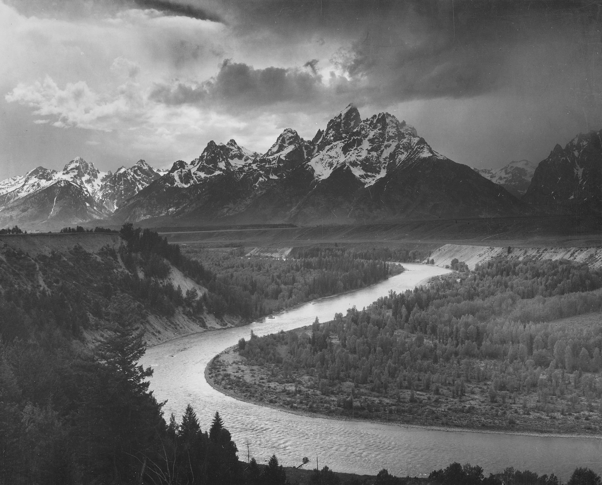
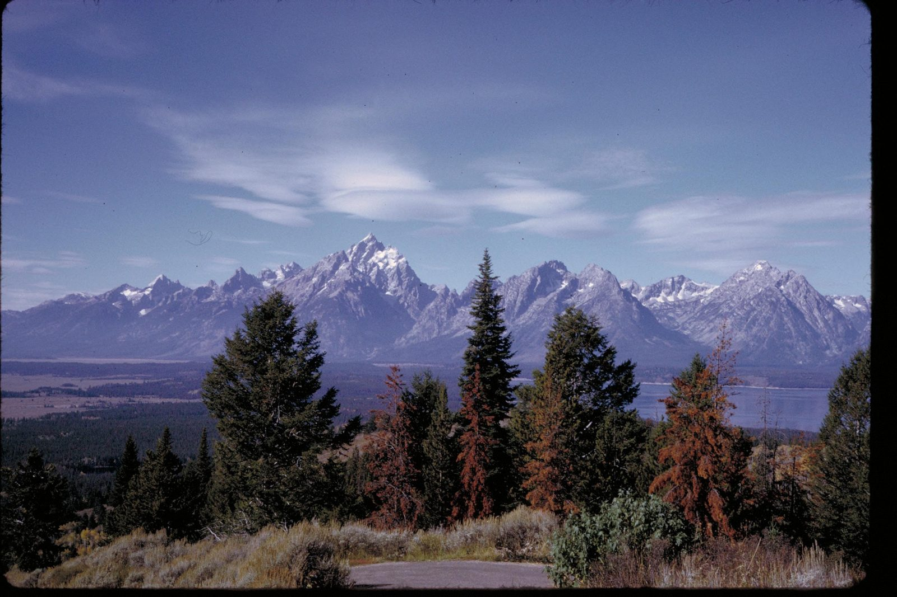

Nov 19, 2026
The first park covered only the Teton Range and the lakes at the foot of the peaks. A 1950 act of Congress added most of the Jackson Hole valley, and wrote a limit on new parks and monuments that still binds Wyoming.
Research report (PDF) · Word copy (.docx)

JACKSON HOLE, Wyo. — The Teton Range rises off the valley floor like a saw blade stood on edge, with no foothills to soften the climb. For a long time, the national park stopped at the high country and left the sage at the base outside the fence.
Congress created Grand Teton National Park (leaves WyoVote) on Feb. 26, 1929. President Calvin Coolidge signed the act. The first park took in the Teton Range and the lakes at the foot of the peaks, and left most of Jackson Hole in other hands.1

Local ranchers, dude-ranch owners, and park officials had already begun talking about a wider reserve. A 1923 meeting at Maud Noble's cabin in the valley set that work in motion.2 John D. Rockefeller Jr. later bought about 35,000 acres in the valley through the Snake River Land Company. The aim was to give the land to the federal government for the park.2 3 Many Jackson Hole residents opposed the secret purchases and the loss of private land and county tax base that a bigger park would bring.3
Park bills stalled in Congress. On March 15, 1943, President Franklin Roosevelt proclaimed Jackson Hole National Monument (leaves WyoVote), taking in Jackson Lake, forest land, and the valley floor left out of the 1929 park.3 4 Ranchers and Wyoming officials opposed the monument and the use of a presidential proclamation to create the monument. A bill to abolish the monument passed Congress and did not become law.3 4
On Sept. 14, 1950, President Harry Truman signed a new law. The act merged the 1929 park with most of the 1943 monument, including the Rockefeller land, into a new Grand Teton National Park.4 5 Leftover monument acres went to the National Elk Refuge and to Teton National Forest.5 The same law protected existing grazing rights, repaid Teton County for lost taxes, and gave Wyoming a voice in elk-herd management inside the park.5
The 1950 act also closed a gate that is still shut. No new national park or national monument may be established or extended in Wyoming unless Congress expressly authorizes the change. That limit remains in federal law.1 6
The peaks were always going to draw a crowd. The fight was over the valley at the foot of the peaks, and over who would get to draw the line.
Credits
- National Park Service — Legal Foundations of Grand Teton (Grand Teton National Park Act, Sept. 14, 1950, 64 Stat. 849, citing the Act of Feb. 26, 1929, 45 Stat. 1314, and the proviso that no further extension or establishment of national parks or monuments in Wyoming may be undertaken except by express authorization of Congress). https://www.nps.gov/grte/learn/management/legal-foundations.htm (leaves WyoVote) . U.S. Government Publishing Office — 16 U.S.C. §§ 406 to 406d notes (act Feb. 26, 1929, ch. 331, 45 Stat. 1314–1316; repealed Sept. 14, 1950, ch. 950, §1, 64 Stat. 849). https://www.govinfo.gov/content/pkg/USCODE-2022-title16/html/USCODE-2022-title16-chap1-subchapXLIX-sec406.htm (leaves WyoVote)
- National Park Service — Cultural History (1923 meeting at Maud Noble's cabin; Rockefeller purchases of 35,000 acres through the Snake River Land Company for donation to the park; 1929 park limited to the Teton Range and lakes at the foot of the mountains). https://www.nps.gov/grte/learn/historyculture/cultural.htm (leaves WyoVote) . National Park Service — Creation of Grand Teton National Park (Jackie Skaggs, January 2000): meeting at Maud Noble's cabin, July 26, 1923; Snake River Land Company campaign to buy more than 35,000 acres; Coolidge signed the 1929 act on Feb. 26, 1929. https://www.nps.gov/grte/planyourvisit/upload/creation.pdf (leaves WyoVote)
- National Park Service — Creation of Grand Teton National Park (hostility over land purchases and tax-base concerns; monument proclaimed March 15, 1943; a bill to abolish the monument passed Congress and was stopped by a presidential veto). https://www.nps.gov/grte/planyourvisit/upload/creation.pdf (leaves WyoVote) . WyoHistory.org — Annette Hein, "The Establishment of Grand Teton National Park" (Nov. 8, 2014): secrecy of the Snake River Land Company purchases; local protest and tax concerns; 1943 monument; a bill to abolish the monument passed Congress and was vetoed. https://wyohistory.org/encyclopedia/establishment-grand-teton-national-park (leaves WyoVote)
- National Park Service — Creation of Grand Teton National Park (Proclamation of Jackson Hole National Monument, March 15, 1943, taking in forest land, Jackson Lake, and the valley; Truman signed the merger bill Sept. 14, 1950). https://www.nps.gov/grte/planyourvisit/upload/creation.pdf (leaves WyoVote) . U.S. Government Publishing Office — 54 U.S.C. § 320301 notes (Jackson Hole National Monument, Proc. No. 2578, March 15, 1943, 57 Stat. 731). https://www.govinfo.gov/content/pkg/USCODE-2023-title54/html/USCODE-2023-title54-subtitleIII-divsnC-chap3203-sec320301.htm (leaves WyoVote)
- Harry S. Truman Library — "Statement by the President Upon Signing Bill Establishing a New Grand Teton National Park," Sept. 14, 1950 (S. 3409, Public Law 787, 81st Congress, 64 Stat. 849: existing park plus most of the 1943 monument; remainder to the National Elk Refuge and Teton National Forest; tax payments to the county; grazing and residential permits; State of Wyoming voice in elk-herd management). https://www.trumanlibrary.gov/library/public-papers/248/statement-president-upon-signing-bill-establishing-new-grand-teton (leaves WyoVote) . National Park Service — Legal Foundations of Grand Teton (same act; leftover monument lands to the National Elk Refuge and Teton National Forest). https://www.nps.gov/grte/learn/management/legal-foundations.htm (leaves WyoVote)
- U.S. Government Publishing Office — 54 U.S.C. § 320301(d) ("No extension or establishment of national monuments in Wyoming may be undertaken except by express authorization of Congress"; historical note: Sept. 14, 1950, ch. 950, §1, 64 Stat. 849). https://www.govinfo.gov/content/pkg/USCODE-2023-title54/html/USCODE-2023-title54-subtitleIII-divsnC-chap3203-sec320301.htm (leaves WyoVote) . U.S. Government Publishing Office — 54 U.S.C. § 104907 ("No extension or establishment of national parks in Wyoming may be undertaken except by express authorization of Congress"; historical note: same 1950 proviso). https://www.govinfo.gov/content/pkg/USCODE-2023-title54/html/USCODE-2023-title54-subtitleI-divsnA-chap1049-sec104907.htm (leaves WyoVote)